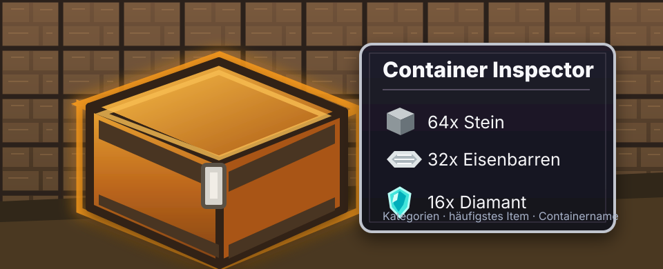

Mittelalterliches Setting
NaC konzentriert sich auf einen mittelalterlichen Themenbereich.

Ein mittelalterliches Minecraft-Datapack mit neuen und überarbeiteten Strukturen sowie eigenen Custom Items.
NaC (Nation and Civilisation’s) ist ein Datapack für Minecraft 1.21.11, das sich seit 2025 in Entwicklung befindet und sich auf einen mittelalterlichen Themenbereich konzentriert. Ziel des Projekts ist es, die Spielwelt durch neue sowie überarbeitete Strukturen zu erweitern und ein immersiveres Spielerlebnis zu schaffen. Zudem werden eigene Custom Items hinzugefügt.
NaC konzentriert sich auf einen mittelalterlichen Themenbereich.
Die Spielwelt wird durch neue Strukturen erweitert.
Bestehende Strukturen werden erweitert und überarbeitet.
Eigene Items erweitern die Gameplay-Möglichkeiten.
Die aktuelle vollständige Version von Nations and Civilizations.
Das bisherige NaC-Release bleibt verfügbar.
Erweiterte Informationen für Container und Kisten.

Hier werden künftig weitere optionale Erweiterungen für NaC angezeigt.
Datapack und Resourcepack sind getrennte Pakete.
Lege den enthaltenen Ordner nac_1.21.11-datapack in saves/<Welt>/datapacks (Mehrspieler: <Weltordner>/datapacks).
Lege den enthaltenen Ordner nac_1.21.11-resurcepack in .minecraft/resourcepacks und aktiviere ihn im Spiel.
Starte die Welt neu oder führe /reload aus.
Wichtig: Beide Update-ZIPs enthalten einen übergeordneten Ordner. Verwende den darin enthaltenen Pack-Ordner, damit pack.mcmeta direkt am Pack-Root liegt.
Die optionalen Pakete sind getrennt vom vollständigen NaC-Update.
Die Datei container-inspector-datapack-1.21.11.zip enthält pack.mcmeta direkt im ZIP-Root. Lege die ZIP-Datei daher unverändert in den datapacks-Ordner der NaC-Welt.
Entpacke das Resourcepack und lege den enthaltenen Ordner nac_1.21.11-resurcepack in .minecraft/resourcepacks. Aktiviere das gewünschte Resourcepack in den Minecraft-Optionen.
Starte die Welt neu oder führe /reload aus.
Zusammenbetrieb: Die geprüften Haupt- und Feature-Dateien verwenden für ihre Lade- und Tick-Aufrufe getrennte Funktionspfade. Aus der Paketstruktur ergibt sich keine erforderliche Reihenfolge; aktiviere beide Datapacks in derselben Welt.